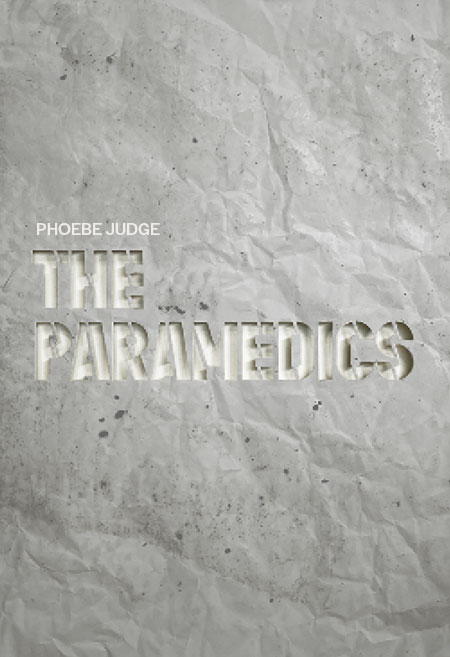
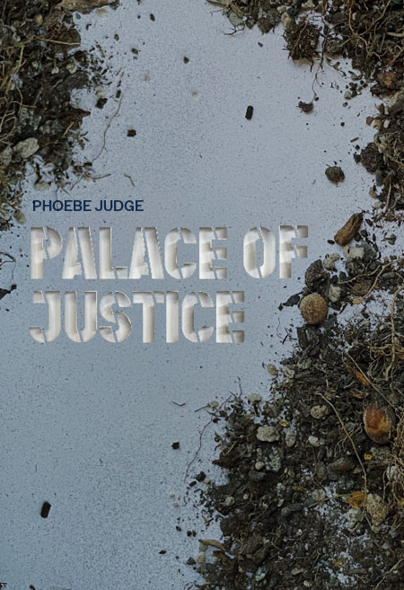

The Paramedics
The extraordinary story of an unjustly forgotten group of Black men in Pittsburgh who became the first paramedics in America, saving lives and changing the world.
As recently as 1965, if you had a medical emergency, the people who showed up at your door would be volunteer firefighters, police officers, or undertakers with a hearse. Today, the story of how a group of Black men from Pittsburgh changed that.
$26.99

Lavender Scare
Helen James grew up in a military family, and when she enlisted in 1952, she felt like she belonged to a right place. Until she realized she was being watched.
While America was in the midst of what would become known as a Lavender Scare, soldiers, sailors, Marines and airmen were ordered to inform on those with whom they served if they suspected a fellow service member to be gay.
$26.99
Palace of Justice
When Benjamin Ferencz was 27 years old, he prosecuted his very first trial. It’s been called the largest murder trial in history, with 22 defendants and victims of more than one million.
After he participated in the Nuremberg trial as a chief prosecutor, Benjamin Ferencz championed the creation of an international court that should be able to prosecute any government’s leaders for war crimes.
$26.99
